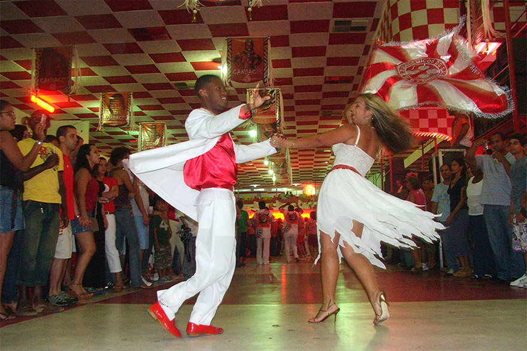

<span id="highlight_page_id" class="hidden">6</span>

<section class="banner">
      <div class="container">
          <div class="row">
              <div class="col-md-8">
                  <h1 class="hs-line">{{ page.name_id }}</h1>
                  <div class="hs-line-des">
                      Time de coreografos incríveis &amp;&nbsp;ótimas pessoass
                  </div>
              </div>
              <div class="col-md-4 mt-30">
                  <div class="mod-breadcrumbs">
                      <a href="index.html">Principal</a>&nbsp;/&nbsp;<a href="#">Cursos</a>&nbsp;/&nbsp;<span>{{ page.name_id }}</span>
                  </div>
              </div>
          </div>
      </div>
  </section>


<section class="blog-single light_section">
<div class="container">
  <div class="row">
      </div>
  <div class="row">

    <!-- content -->
    <div class="col-md-8 col-lg-8">
      <article class="post type-post">
        <header class="entry-header">
          <div class="entry-thumbnail">
            
          </div>
          <h2 class="entry-title">
            <a href="./#" rel="bookmark">{{ page.name_id }}</a>
          </h2>
          <!-- .entry-meta -->
        </header>
        <!-- .entry-header -->

        <div class="entry-content text-justify">
          <p>

          </p>
          <p>

          </p>
          <blockquote>

          </blockquote>
          <p>

          </p>
          <p>

          </p>

        </div>
        <!-- .entry-content -->
      </article>

    </div>
  </div>
</div>
</section>
{% include pre_footer.html %}
